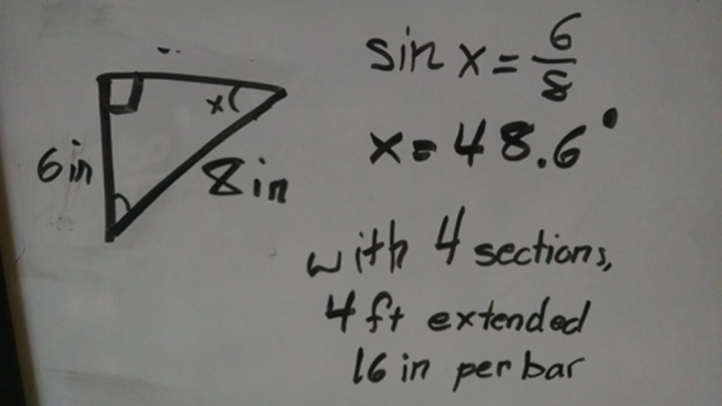

Written by Caitlin Rogers

Task: Start building scissor lift
We know that we are using a scissor lift, but we needed the actual dimensions. We are using 4 sections/ X's (maybe five if the lift is unstable) and we have about enough space for a 16 inch bar.
Apparently trigonometry IS useful in real life!
Reflections:
At first I had done the calculations for a more stable design with 5 sections and a smaller angle, but having longer bars would be easier to cut and lighter.
doing math and stuff I got the angle that the bars would need to be extended to in order to have a total height of 1 ft per X, and 4 ft with all of them extended.
It's not as stable though, because the angle between each arm is above 90 degrees, nearly 100. Mr. Virani says it's not so bad though, and it'll probably be fine because we are using a lift on either side.
Omar and Darshan cut them to size and all of us are now filing them down on the inside so the axle holders will plug into them. We used these 3D plugs so we wouldn't have to drill into the aluminum as exactly as we would need for an axle.